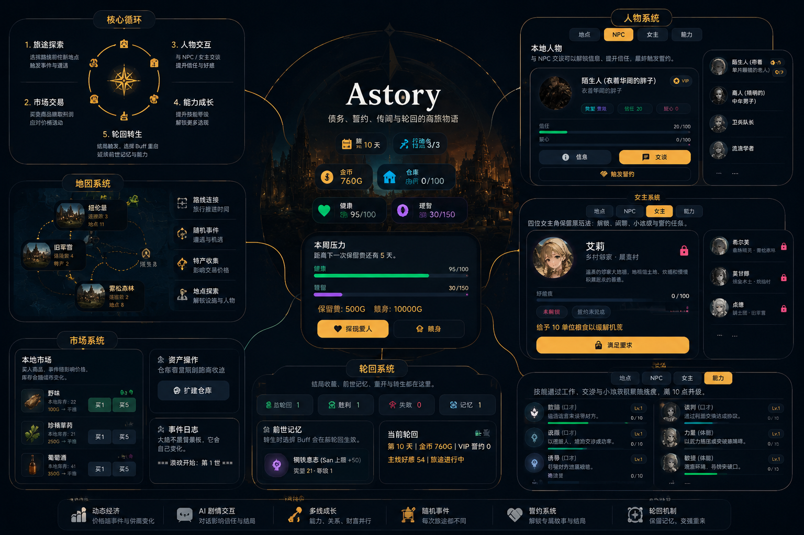
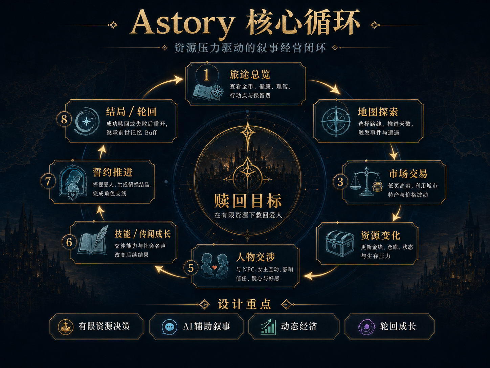
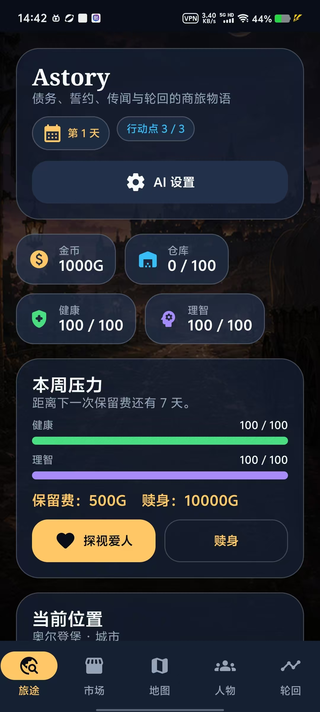
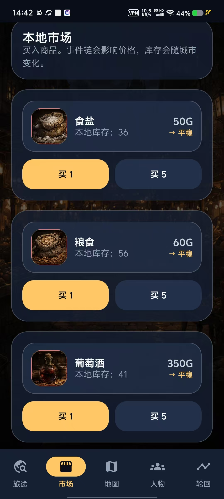
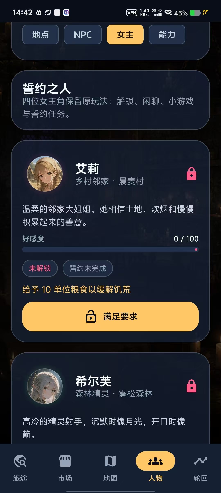
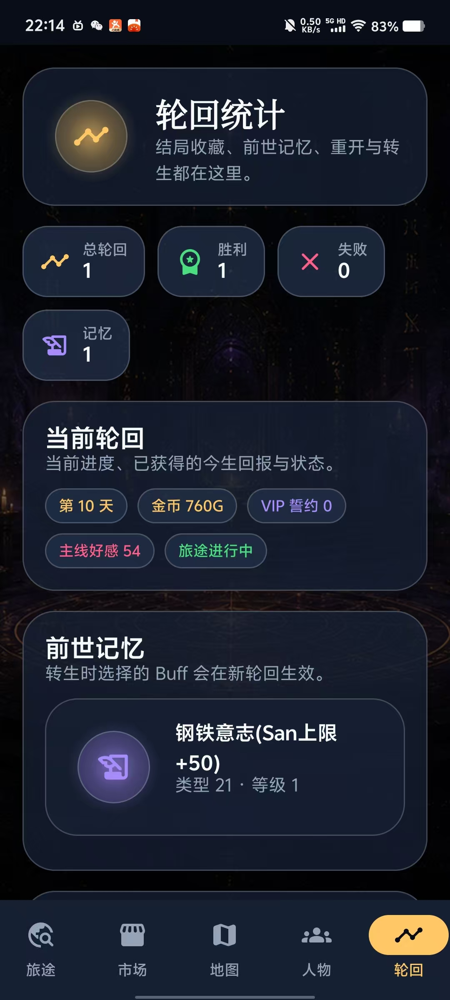
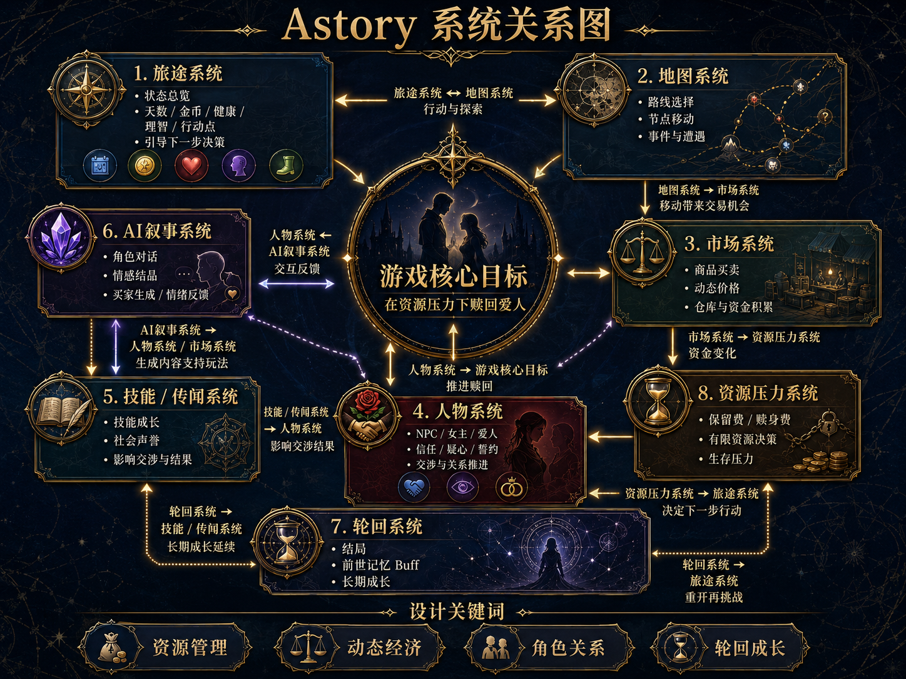
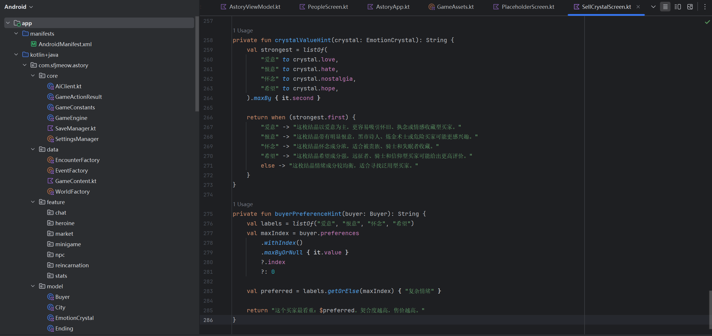

一句话定位
Astory 是一款将资源管理、路线决策、角色关系与轮回机制融合的 AI 叙事型移动产品。
CASE 04 / AI NARRATIVE MOBILE EXPERIENCE
Astory 是一款 Android 移动游戏原型。玩家在债务压力、路线风险与有限资源中做选择， 通过跑商交易、地图探索、NPC 交涉、角色关系和轮回成长，推进“赎回爱人”的主线目标。

02 / PRODUCT OVERVIEW
Astory 是一款将资源管理、路线决策、角色关系与轮回机制融合的 AI 叙事型移动产品。
喜欢 roguelike、资源管理和 narrative game 的移动端玩家；尤其是喜欢在有限资源、 高风险选择和角色关系中推进故事的玩家。
Lifeline 的情绪叙事、Reigns 的高压选择、资源生存游戏的稀缺压力、 roguelike 的轮回成长，以及 dark fantasy / 乙女叙事中的关系动机。
从 0 到 1 的产品定义、复杂系统拆解、信息架构、游戏 UX、AI 交互嵌入， 以及 Android 原型开发落地能力。
03 / CORE LOOP

核心循环 选择 → 代价 → 反馈 → 成长选择目的地，推进时间，承担旅行风险。
根据城市与事件价格波动，低买高卖。
与 NPC、女主和主线爱人互动，推进关系。
工作、小游戏与交涉会提升技能经验。
胜利或失败后选择前世记忆，开启新局。




04 / SYSTEM ARCHITECTURE

展示金币、行动点、健康、理智、仓库、保留费倒计时和事件日志，是玩家的状态中枢。
节点之间通过路线连接。旅行推进天数，刷新事件、遭遇和市场价格。
商品价格受城市、库存和世界事件影响，玩家通过仓库容量和路线规划获得利润。
整合地点、NPC、女主、技能和传闻；把角色关系变成可被操作和反馈的系统。
结局、前世记忆和 Buff 让失败变成下一局的策略资产。
Player、Item、MapNode、NPC、Heroine、Skill、Rumor、Ending 等数据模型。
世界生成、商品模板、城市、VIP、事件链和随机遭遇内容。
GameEngine 处理旅行、交易、工作、恢复、结局、技能和交涉结果。
Compose Screens + Components + Theme + Assets，支撑完整移动端界面。
05 / AI NEGOTIATION SYSTEM
稳定提升信任，低风险。
适合商人和贵族，强调筹码。
更容易解锁秘密，但疑心上升。
短期有效，长期风险更高。
低风险识别身份、职业和破绽。
技能影响工作收益、角色解锁、小游戏结果、交涉方式、信任变化、疑心变化与情报解锁概率。
传闻是社会标签。黑市传闻会让罪犯更愿意试探，也让官方更警惕；可靠行商会提升商人信任。
主线探视会生成爱意、恨意、怀念、希望四类情绪数值，并转化为可出售的资源。
06 / ANDROID IMPLEMENTATION

旅途、市场、地图、人物、聊天、小游戏、轮回和设置页面。
连接 UI 与核心逻辑，处理操作、AI 调用、聊天状态和存档保存。
处理旅行、买卖、事件、赎回、结局、NPC 交涉和小游戏结算。
本地保存当前局、结局收藏、前世记忆和玩家设置。
映射背景、头像、商品、地图节点、小游戏和买家素材。
07 / PROJECT REVIEW
跑商、AI 对话、NPC 信任、角色关系、小游戏和轮回系统同时存在，容易造成认知负担。
用五个主导航承载五类心智模型，并用卡片、状态条和反馈文本持续提示当前目标。
AI 需要被嵌入玩法闭环。技能、传闻、信任和疑心让对话不只是表演，而是系统行为。
补充新手引导、优化地图空间感、完善数量交易、降低 AI 设置门槛，并进行真实用户测试。
Astory 对我来说是一次从产品定义、UX 架构、视觉系统到 Android 开发落地的完整练习。 它证明我能把一个复杂玩法概念拆解成模块、组织成路径，并做成可以运行的移动端原型。